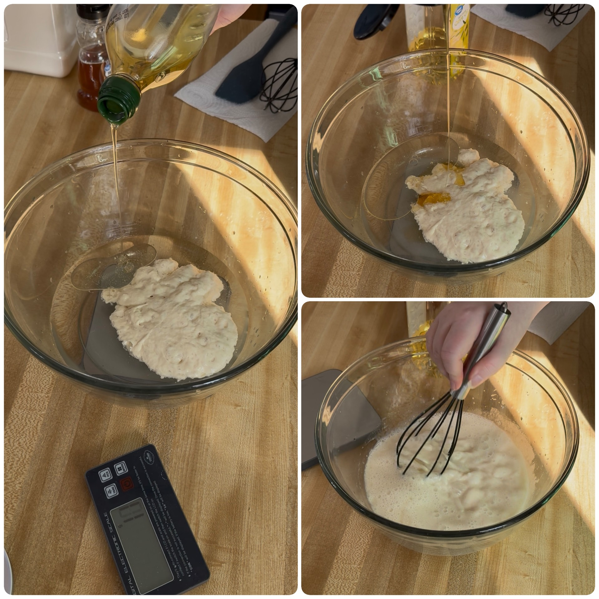
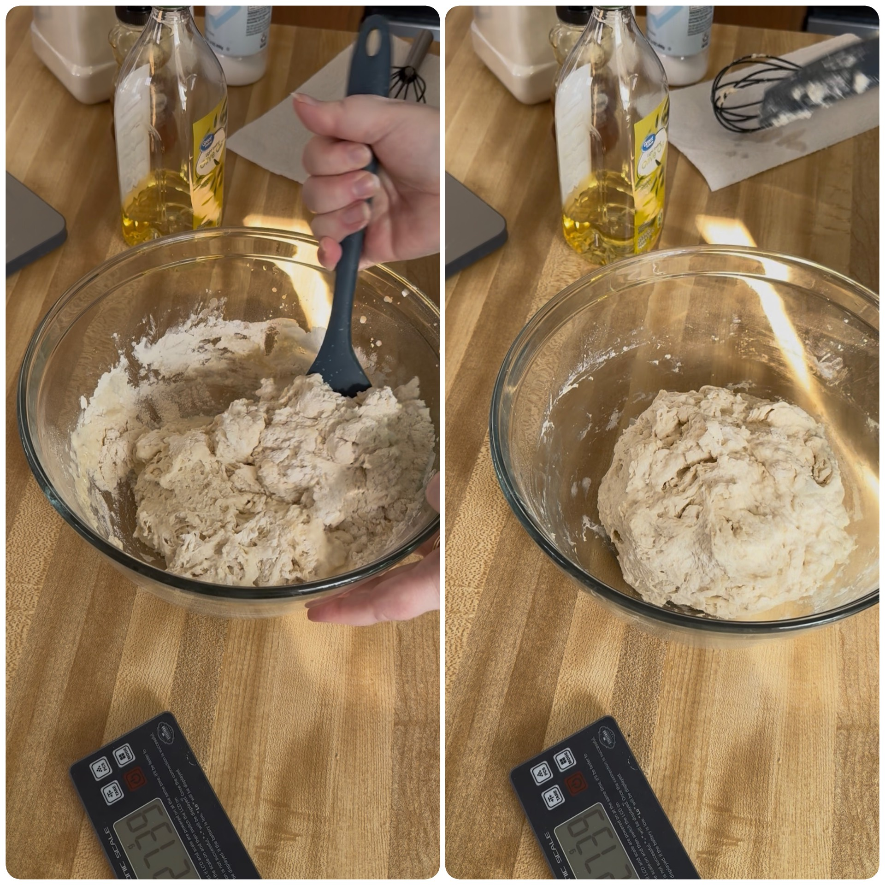
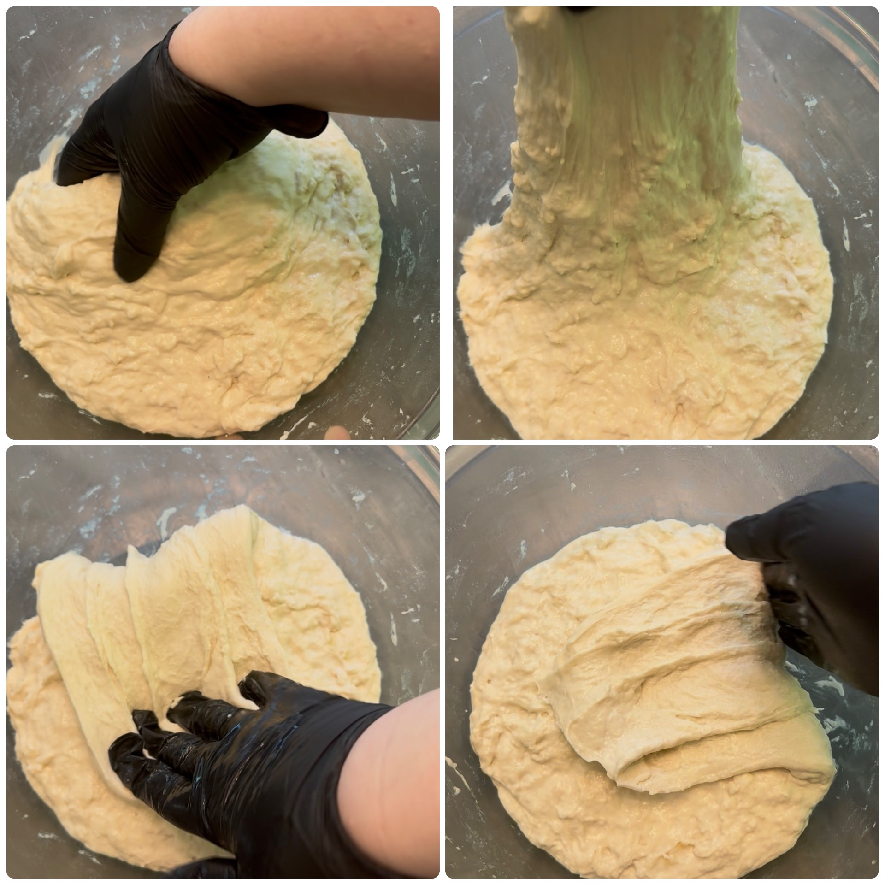
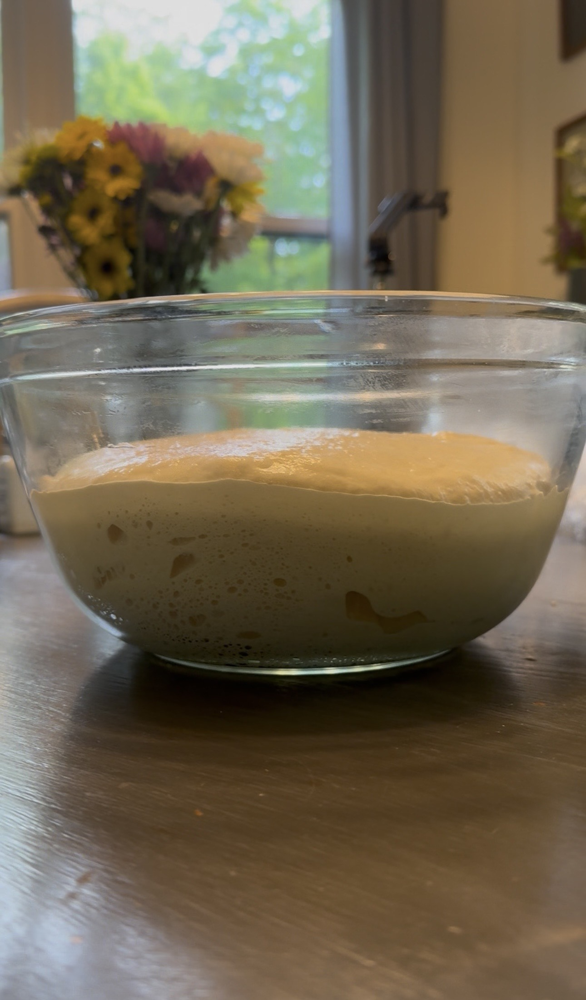
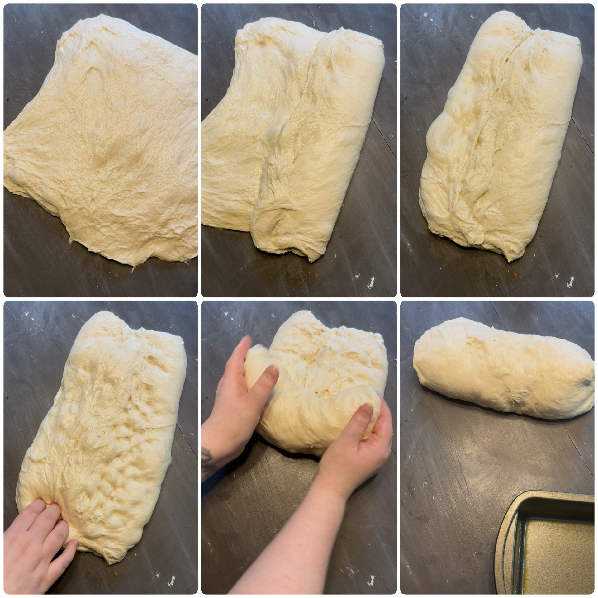
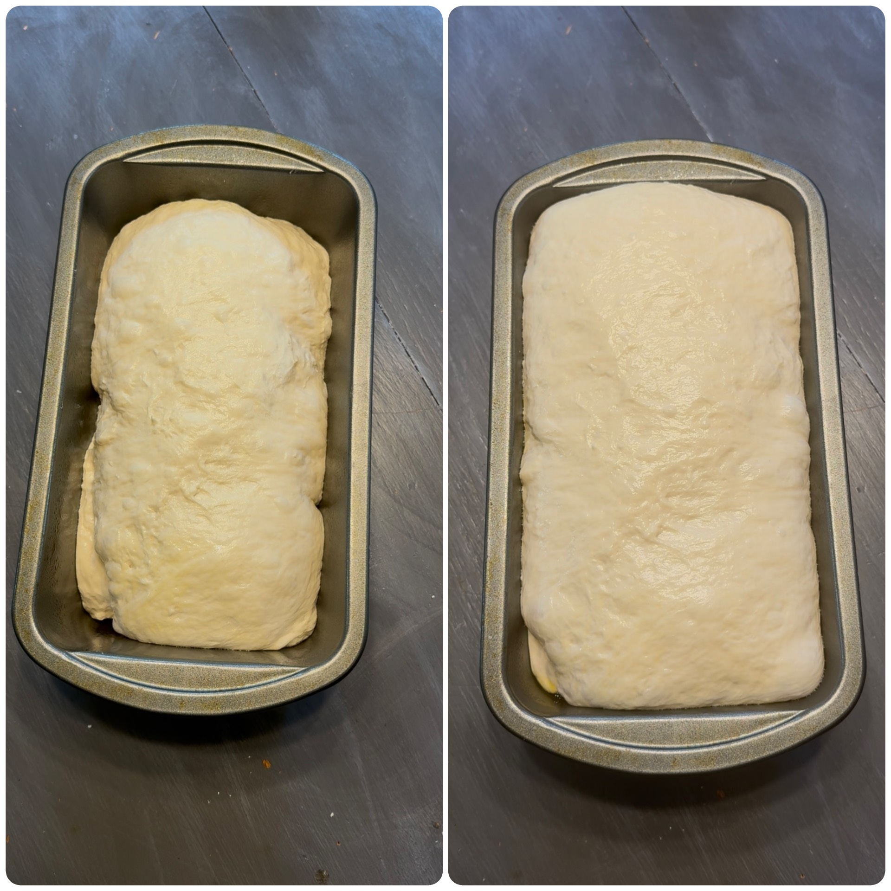
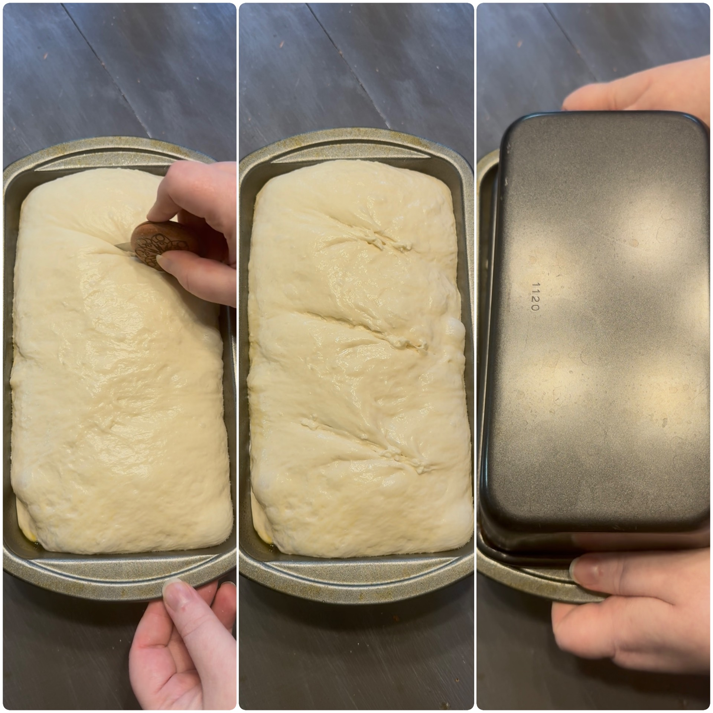
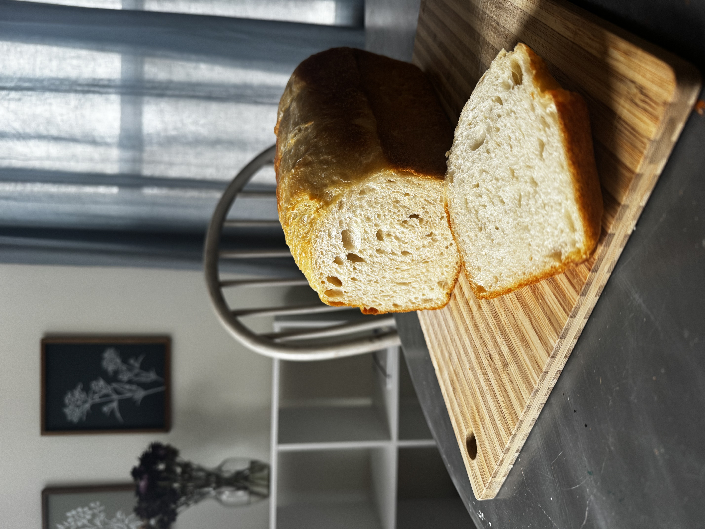

🥪 Soft Sourdough Sandwich Bread
A soft, fluffy everyday sandwich loaf with a tender crumb and mild sourdough flavor.
🧰 Equipment
1 standard loaf pan (approximately 9x5 inches)
🧾 Ingredients
- 150g active sourdough starter
- 325g warm water
- 30g oil (avocado oil or light-tasting olive oil)
- 25g honey
- 500g bread flour
- 10g salt
- Butter (for brushing the finished crust)
🥣 Mix the Dough
In a large mixing bowl, combine:
- 325g warm water
- 150g active sourdough starter
- 30g oil
- 25g honey
Whisk until the mixture looks milky and slightly frothy.

Add 500g bread flour and 10g salt. Mix with a dough whisk or spatula until combined.
Using a slightly damp hand (or glove), continue mixing for a few minutes until no dry flour remains. The dough will look shaggy at first. That's normal.

Cover and let rest for 1 hour.
✋ Stretch and Folds
After the rest, perform 4 rounds of stretch and folds, spaced 30 minutes apart.
One round:
- Wet your hand lightly
- Grab one edge of the dough
- Stretch it upward
- Fold it into the center
- Rotate the bowl and repeat on all four sides
Cover and rest 30 minutes between each round. Each round will help the dough become smoother and stronger.

🌤️ Rest & Rise
After your final stretch and fold, cover the dough and let it rest until it becomes light, airy, and puffy. This usually takes about 4-8 hours, depending on room temperature and starter strength.

🍞 Shape the Dough
Lightly dampen your work surface and gently turn out the dough. Pat or stretch it into a rectangle.
- Fold one side into the center.
- Fold the opposite side into the center so the edges meet.
- Using lightly damp fingers, gently press out any large air bubbles.
- Starting from one short end, roll the dough into a log.
- Pinch the seam and ends closed.

Place the dough seam-side down into a greased loaf pan.
🧺 Final Proof
Cover the loaf pan and let the dough rise at room temperature for 1-2 hours. The dough is ready when it looks noticeably puffy and has risen to fill most of the pan.

🔥 Bake
Preheat the oven to 400°F (204°C).
When the dough is ready, use a sharp blade or bread lame to make 3 evenly spaced shallow cuts across the top of the loaf.

Lightly mist the top of the dough with water.
- If you have two pans: Cover the loaf pan by inverting the second greased loaf pan directly on top of it to trap the steam.
- If you have one pan: Tent the loaf pan loosely with a sheet of aluminum foil, ensuring it arches high enough that the rising dough won't hit it.
Bake for 30 minutes covered at 400°F (204°C). Remove the cover. Reduce the oven temperature to 375°F (190°C) and bake for another 15 minutes.
🧈 Finish
Remove the bread from the loaf pan immediately to prevent the crust from getting soggy, and place it on a wire cooling rack.
Allow the loaf to cool completely before slicing.
